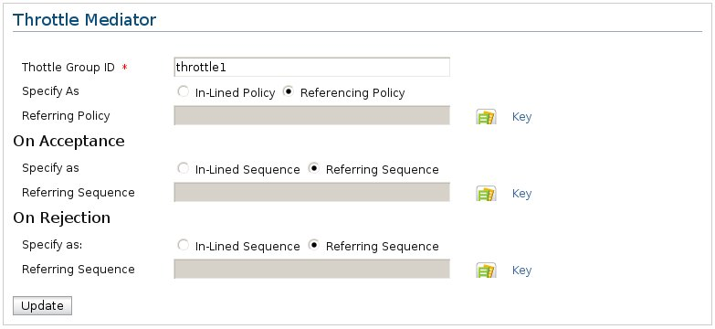

The Throttle mediator can be used for rate limiting as well as concurrency based limiting. A WS-Policy dictates the throttling configuration and may be specified inline or loaded from the registry. The Throttle mediator could be added in the request path for rate limiting and concurrent access limitation. When using for concurrent access limitation, the same throttle mediator 'id' must be triggered on the response flow so that completed responses are deducted from the available limit. (i.e. two instances of the throttle mediator with the same 'id' attribute in the request and response flows). The 'onReject' and 'onAccept' sequence references or inline sequences define how accepted and rejected messages are to be handled
